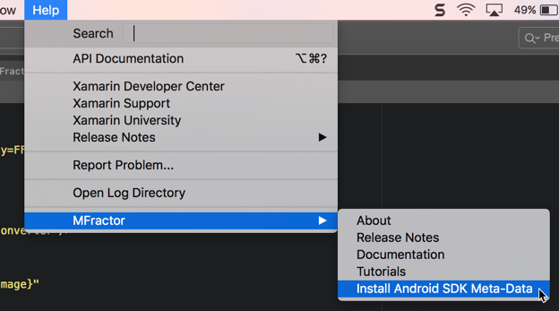
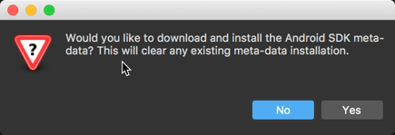
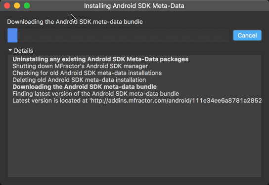

Frequently Asked Questions
Answers to some commonly asked questions
How can I get help or support?
If something doesn't work or you'd like a sweet new feature added, be patient and contact me:
- Via Twitter: Give me a holla at @matthewrdev
- Via Slack: Drop in to chat anytime in the #mfractor Xamarin Slack sub-channel.
- Via Email: Shot an email to hello@mfractor.com
What version of Visual Studio Mac is MFractor compatible with?
The latest version of MFractor always targets the current stable channel version of Visual Studio Mac.
Does MFractor support Visual Studio Windows?
MFractor does not support Visual Studio Windows. This is on the roadmap for the future but there is no concrete timeline. A news announcement will be published work commences on MFractor for Visual Studio Windows.
How do I get started using MFractor?
MFractor does a lot so it may take a little while to learn its ins and outs. If you'd like to learn how to best use it, you have a few options:
- Read the in-depth docs for both Xamarin.Forms and Xamarin.Android (see the menu to the left). Each article covers a feature in-depth and fully explains how to use it.
- Drop into the #mfractor Xamarin Slack sub-channel and start chatting to me (Matthew Robbins). I'm happy to answer any questions you have.
How do I file a bug report?
If you notice a bug while you are using MFractor, please file a bug report by taking the following steps:
- Go to the MFractor Feedback repository.
- Enter a 2-3 sentence description of the bug, the steps you took that triggered it and the symptoms of the bug.
- Copy MFractors version information by opening the About dialog (Help -> MFractor -> About) and click Copy Build Details Into Clipboard.
How do I install or update the Android SDK meta-data bundle?
If you'd like to activate tooltips and go-to declaration support for Android SDK resources (for example: @android:string/my_string), you can install MFractors Android SDK meta-data.
To install, go to the Help main menu, select MFractor and then Install Android SDK Meta-Data:

You will be prompted to confirm the installation; installing the meta-data will wipe any existing installation!

MFractor will then download and install the latest meta-data bundle:

When the installation has completed, just close the installation success message; there is no need to restart Visual Studio Mac.
What is the .droidres folder?
The .droidres folder contains the meta-data that's generated when MFractor indexes your Android projects. This meta-data is used to power resource tooltips and resource go-to declaration for Android projets.
It is safe to delete whenever you want however some features for Android development won't work correctly without it.
Should I check .droidres into source control?
No, you should not check .droidres into your source control.
If you are using git, append the following text to the end of your .gitignore to exclude .droidres:
# MFractor's Android meta-data cache
*.droidres/